Document Object Model
El Modelo de Objetos del Documento (DOM) es una interfaz de programación de aplicaciones (API) para documentos HTML y XML. Define la estructura lógica de los documentos y el modo en que se accede y manipula.
El DOM representa un documento como un árbol de objetos. Cada nodo del árbol representa un elemento de documento, como un elemento, un atributo, un texto o un comentario. Los nodos se pueden relacionar entre sí mediante relaciones padre-hijo, hermano y vecino.
El DOM se puede utilizar para acceder a los elementos de un documento, modificarlos o crear nuevos elementos. También se puede utilizar para agregar eventos a los elementos de un documento, lo que permite que los elementos interactúen con el usuario.
El DOM es una herramienta poderosa que se puede utilizar para crear sitios web dinámicos e interactivos.
Beneficios de usar el DOM
- El DOM permite acceder y manipular documentos HTML y XML de forma programática.
- El DOM se puede utilizar para agregar eventos a los elementos de un documento, lo que permite que los elementos interactúen con el usuario.
- El DOM es una herramienta poderosa que se puede utilizar para crear sitios web dinámicos e interactivos.
Desventajas de usar el DOM
- El DOM puede ser complejo de aprender y usar.
- El DOM puede ser lento, especialmente para documentos grandes.
- El DOM no se puede utilizar para todos los tipos de documentos HTML y XML.
WEB APIs
¿Qué son las API web?
Una API web es una interfaz de programación de aplicaciones que permite a las aplicaciones comunicarse entre sí a través de Internet. Las API web se utilizan a menudo para compartir datos y funcionalidad entre aplicaciones web, aplicaciones móviles y servicios en la nube.
Las API web se basan en el protocolo HTTP, que es el mismo protocolo que se utiliza para cargar páginas web en un navegador web. Esto significa que las API web son muy fáciles de usar y pueden ser consumidas por una amplia gama de aplicaciones.
Las API web ofrecen una serie de ventajas, incluyendo:
- Facilidad de uso: Las API web son muy fáciles de usar y pueden ser consumidas por una amplia gama de aplicaciones.
- Escalabilidad: Las API web son escalables y pueden manejar grandes volúmenes de tráfico.
- Seguridad: Las API web pueden ser seguras y pueden proteger los datos de los usuarios.
- Robustez: Las API web son robustas y pueden manejar errores y fallos.
Las API web se utilizan en una amplia gama de aplicaciones, incluyendo:
- Social media: Las API web se utilizan para compartir datos y funcionalidad entre aplicaciones de redes sociales.
- Comercio electrónico: Las API web se utilizan para procesar pagos y gestionar inventarios.
- Servicios de mapas: Las API web se utilizan para mostrar mapas y obtener indicaciones.
- Notificación push: Las API web se utilizan para enviar notificaciones push a los usuarios.
Las API web son una herramienta poderosa que puede utilizarse para compartir datos y funcionalidad entre aplicaciones. Las API web son fáciles de usar, escalables, seguras y robustas, y se utilizan en una amplia gama de aplicaciones.
Nodos, Elementos y Selectores
Un nodo es la unidad básica de un documento HTML. Un nodo puede ser un elemento, un atributo, un texto o un comentario.
Un elemento es un nodo que representa un componente de una página web. Por ejemplo, un elemento
representa un párrafo, un elemento representa una división y un elemento representa un enlace.
Un selector es una cadena de caracteres que se utiliza para seleccionar uno o más elementos en un documento HTML. Los selectores se utilizan en CSS para aplicar estilos a los elementos seleccionados.
Aquí hay algunos ejemplos de selectores:
Fragmento de HTML
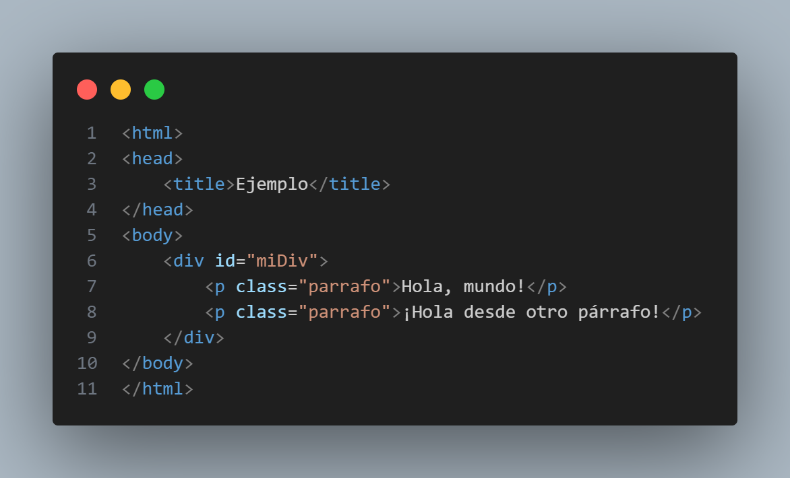Selección de elementos por ID y Clase
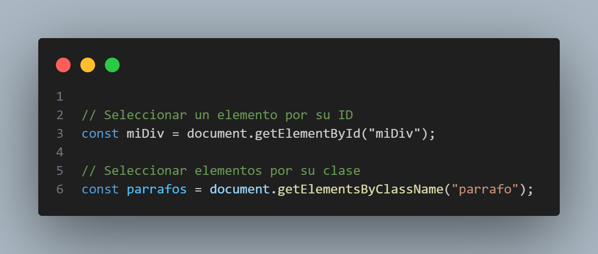Manipulación de contenido de elementos
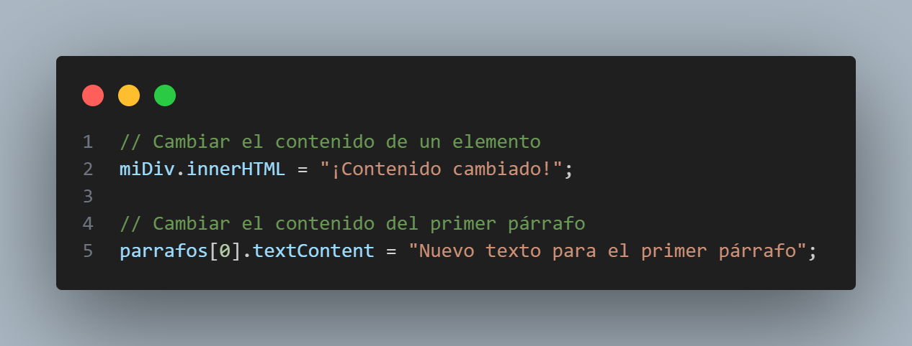Creación de nuevos elementos y nodos
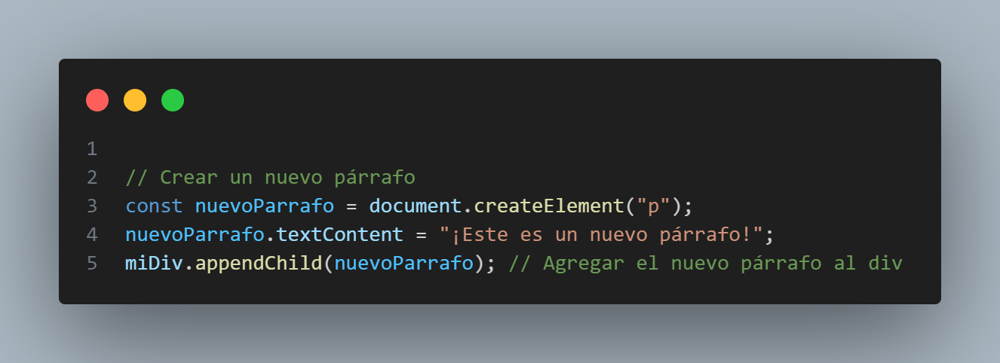Modificación de atributos de elementos
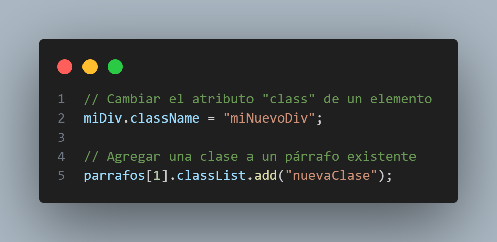Eliminación de elementos
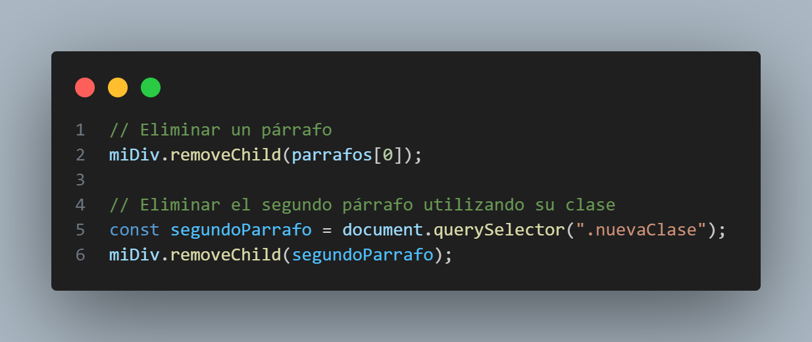Atributos y Data-Attributes
Los atributos y los data attributes (atributos de datos) son conceptos relacionados en HTML y JavaScript que permiten agregar información adicional a elementos HTML para diversos propósitos, como el estilo, la manipulación con JavaScript o para proporcionar datos contextuales.
Atributos en HTML
- class: Se utiliza para asignar una o varias clases CSS a un elemento, permitiendo aplicar estilos específicos.
- id: Proporciona una identificación única para un elemento en el documento.
- src: Utilizado en elementos como img o script para especificar la fuente de una imagen o un script, respectivamente.
- href: Usado en enlaces para indicar la dirección web a la que se redireccionará cuando se haga clic en el enlace.
Los atributos son características o propiedades que se pueden agregar a elementos HTML para modificar su comportamiento o apariencia. Algunos ejemplos de atributos en HTML son:
Data Attributes (Atributos de Datos) en HTML
Los data attributes son una forma de almacenar información personalizada en elementos HTML. Estos atributos comienzan con "data-" seguido de un nombre que elijas. Son útiles cuando deseas almacenar datos en el HTML para luego acceder o manipular con JavaScript sin afectar la semántica ni el comportamiento estándar del elemento.
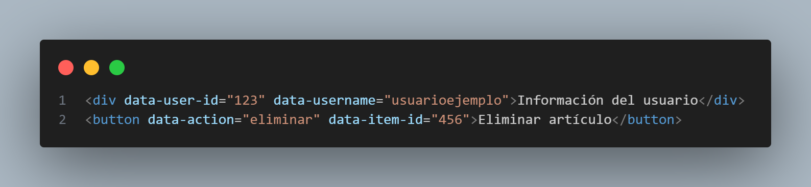Luego, puedes acceder a estos data attributes en JavaScript para realizar acciones específicas
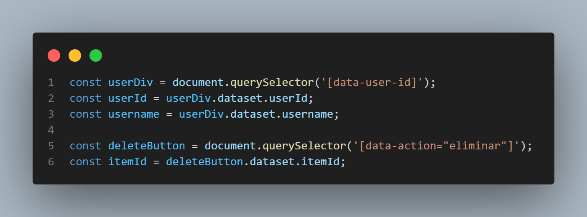Estilos y Variables CSS
Clases CSS
En el contexto del desarrollo web, el DOM (Document Object Model) es una representación estructurada en forma de árbol del contenido de un documento HTML o XML. El DOM permite a los desarrolladores acceder, manipular y modificar elementos y contenido en una página web mediante lenguajes de programación como JavaScript. Las clases CSS (Cascading Style Sheets) se utilizan para aplicar estilos a los elementos en una página web. Aquí te explico cómo trabajar con clases CSS en el DOM:
Agregar una clase a un elemento
Puedes agregar una clase CSS a un elemento del DOM utilizando JavaScript. Para ello, utiliza la propiedad classList del elemento.
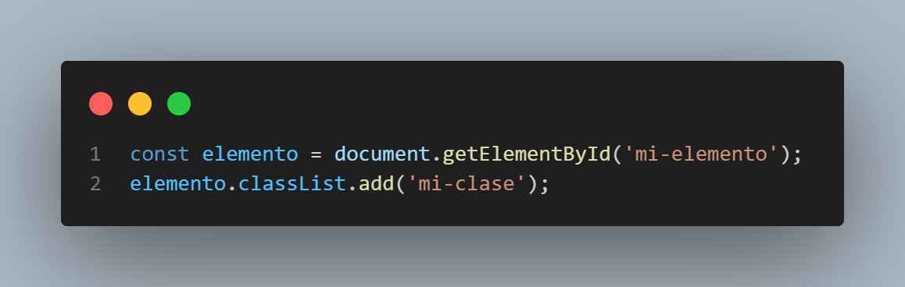Eliminar una clase de un elemento
Si deseas eliminar una clase de un elemento, puedes utilizar el método remove de classList.
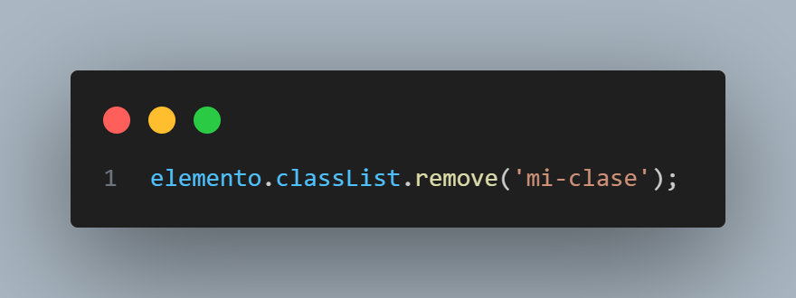Alternar una clase en un elemento
Si deseas alternar una clase (agregarla si no está presente o eliminarla si está presente) en un elemento, puedes utilizar el método toggle de classList.
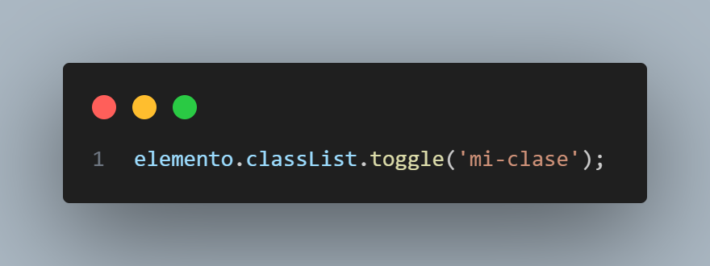Verificar si un elemento tiene una clase
Puedes comprobar si un elemento tiene una clase en particular utilizando el método contains de classList.
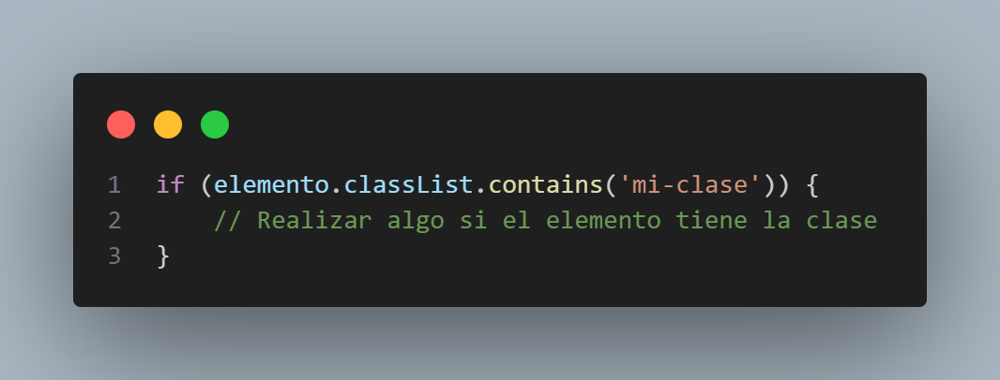Acceder a todos los elementos con una clase en particular
Puedes seleccionar todos los elementos que tienen una clase en particular utilizando el método querySelectorAll.
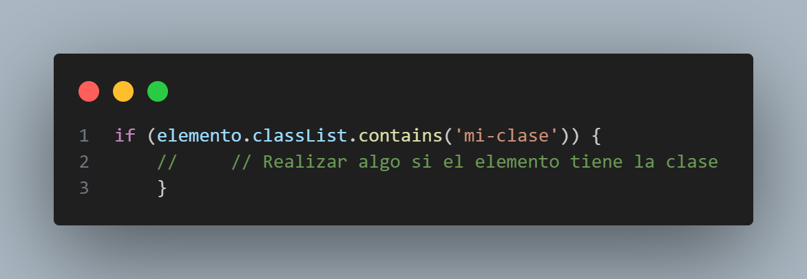Modificar estilos en línea usando clases
Las clases CSS también pueden usarse para modificar estilos en línea a través de JavaScript.
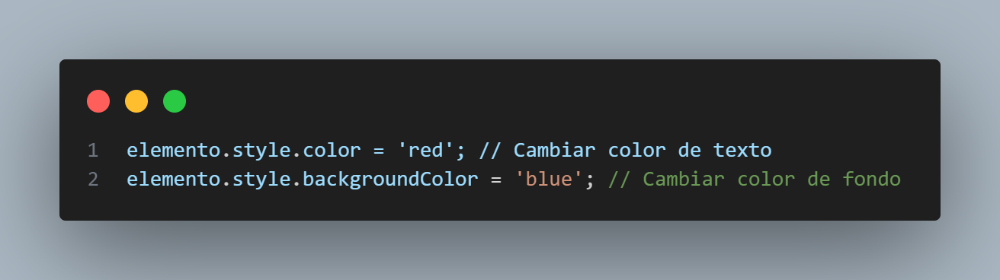Texto y HTML
Parece que quieres saber cómo manipular el contenido de un elemento HTML y el DOM usando JavaScript. Aquí tienes un ejemplo que muestra cómo cambiar el texto y agregar contenido HTML a un elemento
utilizando JavaScript
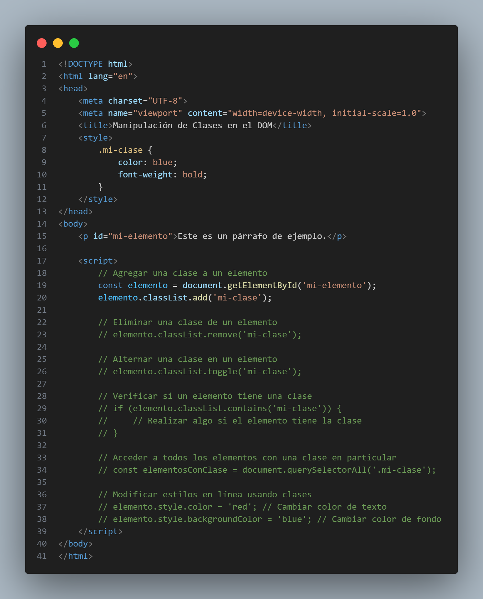Utilizamos la propiedad textContent para cambiar el contenido de texto del elemento.
Utilizamos la propiedad innerHTML para agregar contenido HTML al elemento. En este caso, estamos agregando texto en negrita y en cursiva utilizando las etiquetas strong y em.
Es importante tener en cuenta que al utilizar innerHTML, estás manipulando el contenido HTML del elemento y permitiendo que se interpreten etiquetas HTML. Sin embargo, ten en cuenta que también existe el riesgo de inyección de código si se inserta contenido no seguro proveniente de fuentes no confiables.
DOM Traversing: Recorriendo el DOM
El recorrido del DOM (DOM Traversing) es una técnica en la programación web que implica moverse a través de los elementos del Document Object Model (DOM) para acceder a diferentes partes de la estructura HTML y manipularlas con JavaScript. Esto es especialmente útil cuando deseas interactuar con elementos HTML que no tienen identificadores específicos (como IDs o clases), o cuando necesitas buscar elementos dentro de un contexto específico. Aquí tienes algunos métodos comunes para recorrer el DOM:
parentNode
El método parentNode te permite acceder al elemento padre del elemento actual.
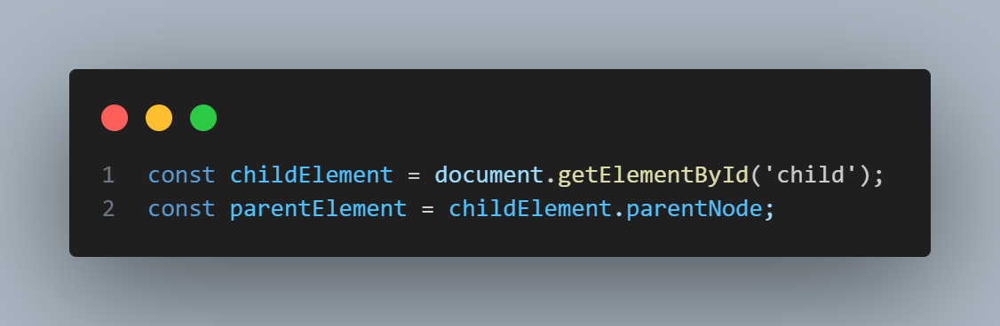childNodes y children
childNodes devuelve una lista de todos los nodos hijos (incluyendo nodos de texto y comentarios), mientras que children devuelve solo los nodos hijos que son elementos HTML.
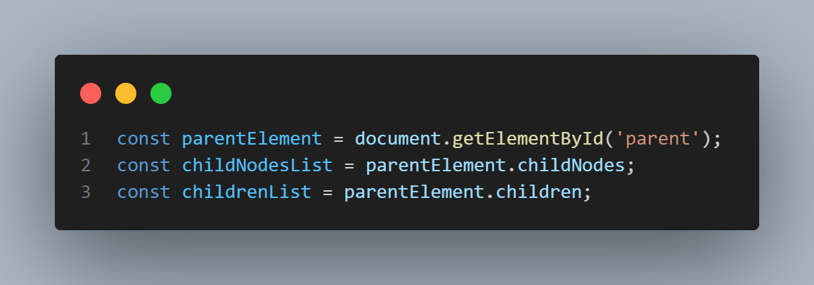nextSibling y previousSibling
nextSibling te da el siguiente nodo hermano, mientras que previousSibling te da el nodo hermano anterior (ambos pueden incluir nodos de texto y comentarios).
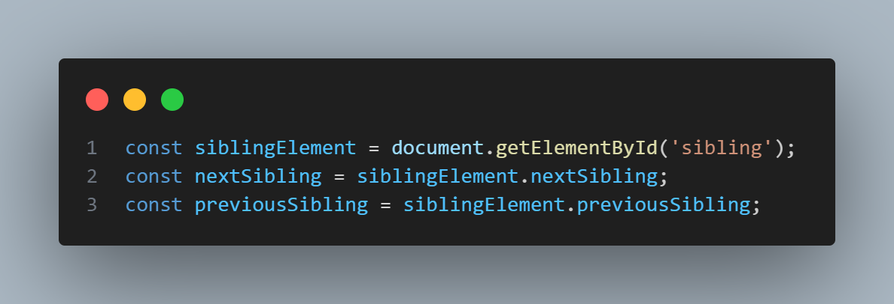nextElementSibling y previousElementSibling
Estos métodos te proporcionan el siguiente y el anterior elemento hermano (excluyendo nodos de texto y comentarios)
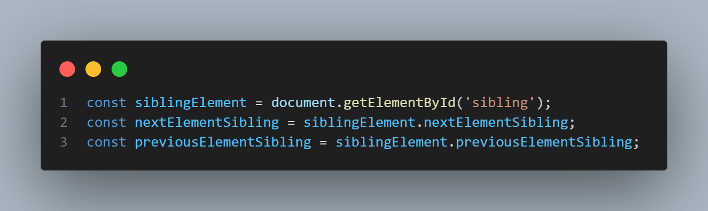querySelector y querySelectorAll
Estos métodos te permiten buscar elementos dentro de un elemento padre utilizando selectores CSS.
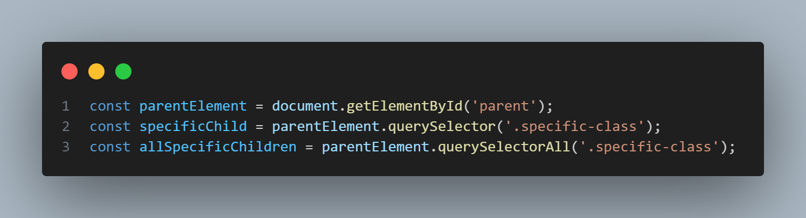closest
closest busca el ancestro más cercano que cumpla con un selector dado.
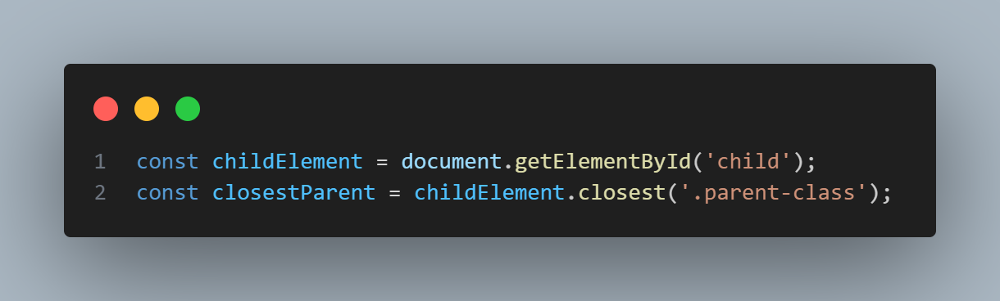Creando Elementos y Fragmentos
Puedes crear nuevos elementos HTML en JavaScript utilizando el método document.createElement() y luego personalizarlos según tus necesidades. Aquí hay un ejemplo de cómo crear un nuevo párrafo p:
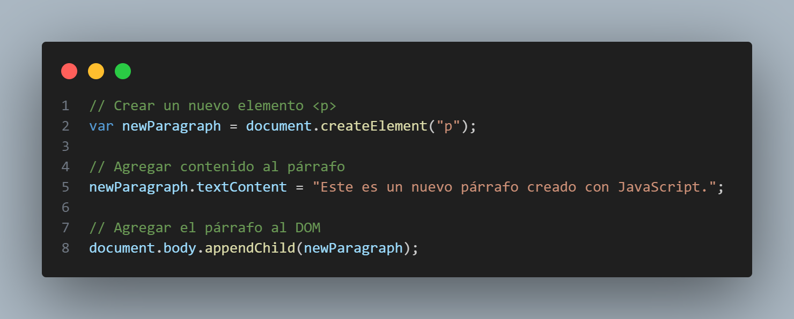Creación de Fragmentos
Los fragmentos son útiles cuando deseas crear y manipular múltiples elementos sin afectar el rendimiento al realizar múltiples modificaciones en el DOM. Puedes utilizar un fragmento para agregar varios elementos antes de insertarlos en el DOM, lo que reduce la cantidad de operaciones de repintado.
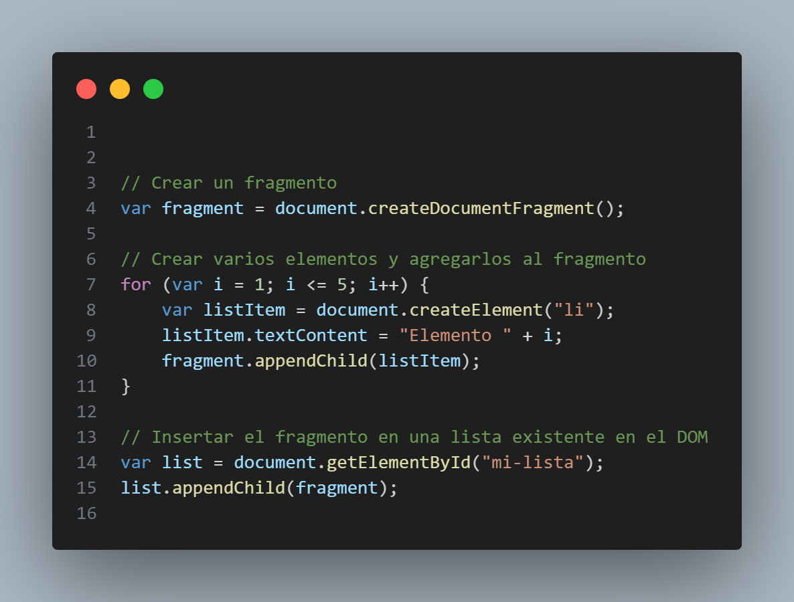Templates HTML
Los templates en HTML son una característica que te permite definir fragmentos de contenido que no se renderizan cuando la página se carga inicialmente, pero que puedes clonar y activar más tarde utilizando JavaScript. Los templates son útiles cuando deseas reutilizar bloques de contenido en diferentes partes de tu página sin tener que crear elementos y fragmentos dinámicamente.
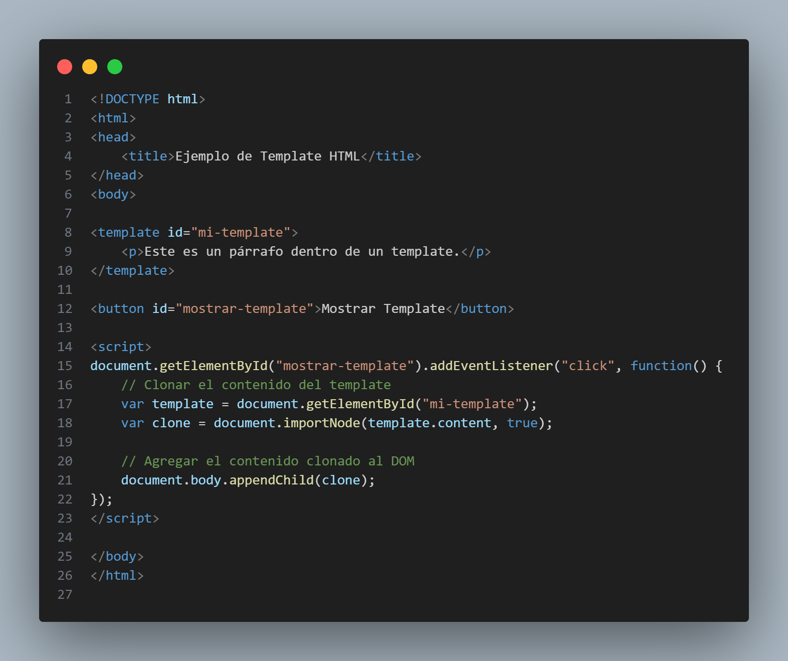En este ejemplo, hemos definido un template dentro del elemento template. Luego, mediante JavaScript, hemos agregado un evento al botón "Mostrar Template". Cuando se hace clic en el botón, clonamos el contenido del template utilizando document.importNode() y lo agregamos al cuerpo del documento.
Los templates son especialmente útiles cuando necesitas generar elementos complejos o repetitivos en respuesta a eventos del usuario o para crear contenido dinámico en tu página web.
Modificando Elementos ( Cool Style )
Modificar elementos en JavaScript es una tarea común cuando trabajas con el DOM. Puedes cambiar propiedades, contenido, estilos y más. Aquí tienes algunos ejemplos de cómo modificar elementos.
Cambiar Contenido
Para cambiar el contenido de un elemento, puedes acceder a su propiedad textContent o innerHTML. Aquí tienes un ejemplo que cambia el contenido de un párrafo
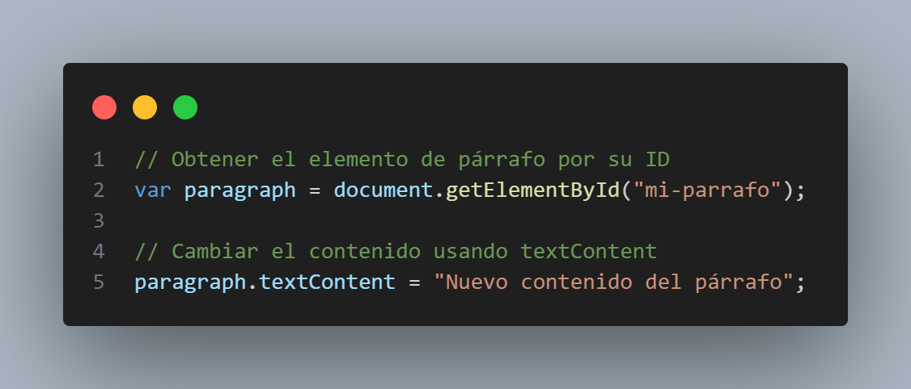Cambiar Atributos:
Puedes modificar los atributos de un elemento utilizando las propiedades del elemento. Aquí hay un ejemplo que cambia el atributo src de una imagen.
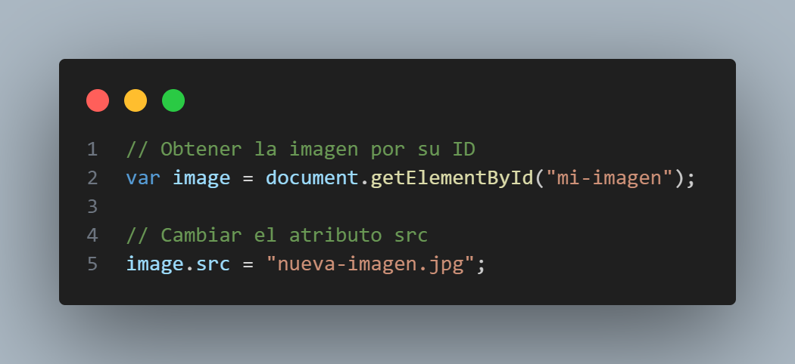Cambiar Estilos
Para cambiar los estilos de un elemento, puedes acceder a la propiedad style del elemento y asignar valores a sus propiedades CSS. Aquí hay un ejemplo que cambia el color de fondo de un elemento.
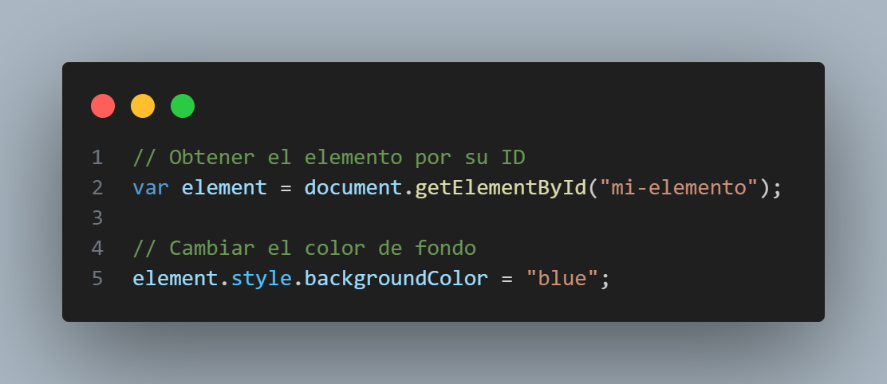Agregar/Quitar Clases
Puedes agregar o quitar clases de un elemento para aplicar estilos o funcionalidades específicas. Utiliza las propiedades classList.add() y classList.remove() para ello. Aquí tienes un ejemplo.
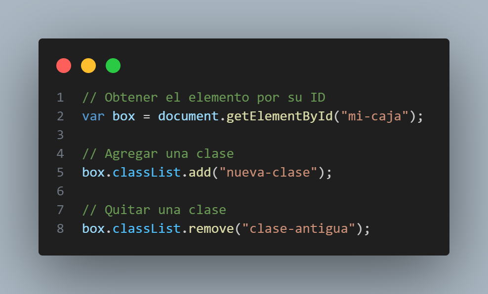Manejadores de Eventos
Los manejadores de eventos en JavaScript son funciones que se ejecutan en respuesta a un evento específico que ocurre en un elemento del DOM, como hacer clic en un botón, mover el mouse sobre un elemento, presionar una tecla, etc. Aquí tienes algunos ejemplos de cómo trabajar con manejadores de eventos
Agregar un Manejador de Evento
Puedes agregar un manejador de evento a un elemento utilizando el método addEventListener(). Aquí tienes un ejemplo que agrega un manejador de evento de clic a un botón
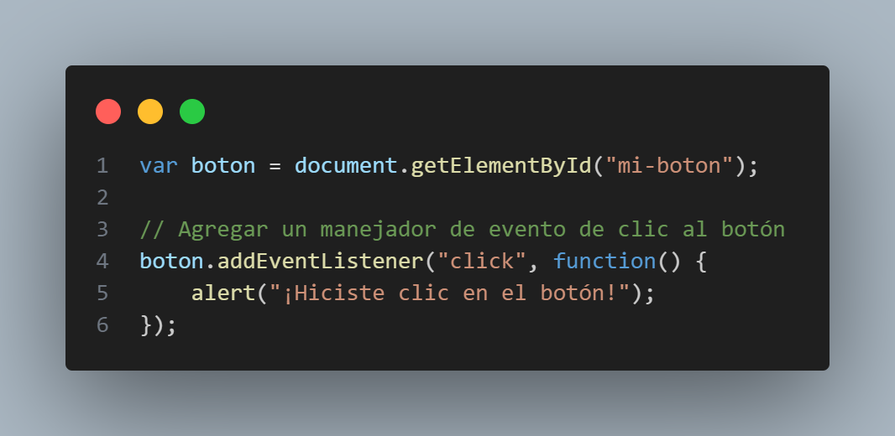Pasar Parámetros a un Manejador de Evento
Si necesitas pasar parámetros personalizados a tu manejador de evento, puedes hacerlo utilizando una función anónima. Aquí hay un ejemplo que muestra cómo pasar un mensaje personalizado al hacer clic en un botón
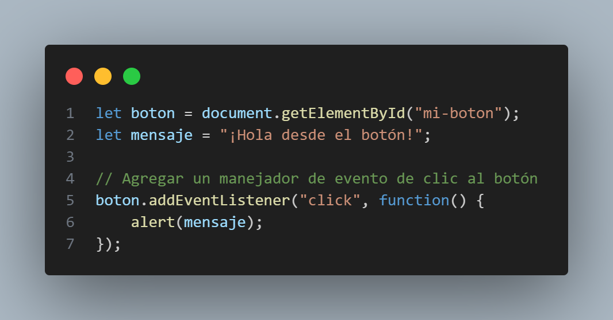Remover un Manejador de Evento
Si deseas quitar un manejador de evento de un elemento, puedes utilizar el método removeEventListener(). Es importante que la función pasada al removeEventListener() sea la misma que se pasó al addEventListener(). Aquí tienes un ejemplo
Estos son solo ejemplos básicos de cómo trabajar con manejadores de eventos en JavaScript. Puedes utilizarlos para responder a una variedad de eventos en tus páginas web y aplicaciones. Si tienes más preguntas o necesitas más ejemplos, no dudes en preguntar.
Tipos de eventos
Evento de Clic (click):
Se dispara cuando un elemento es clicado.
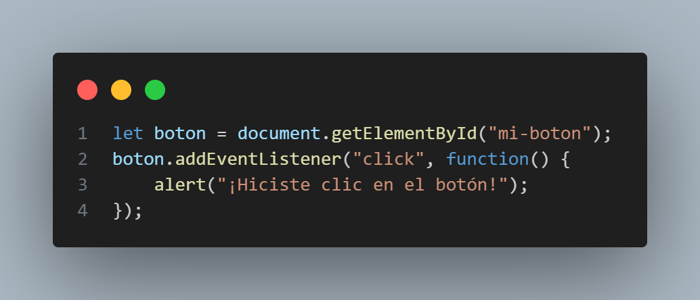Evento de Cambio (change):
Se dispara cuando el valor de un elemento cambia, como en inputs de tipo texto o select.
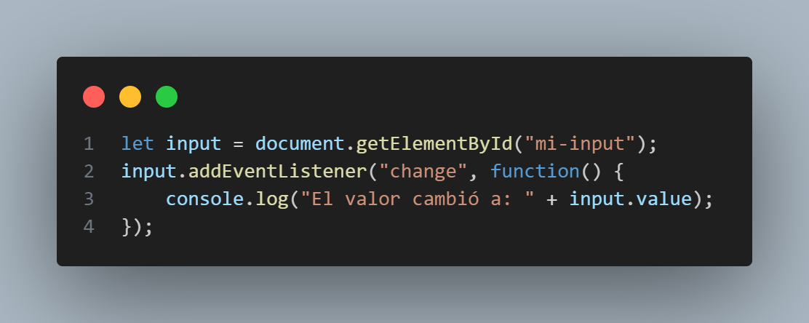Evento de Teclado (keydown, keyup, keypress):
Se disparan cuando se presiona o suelta una tecla del teclado.
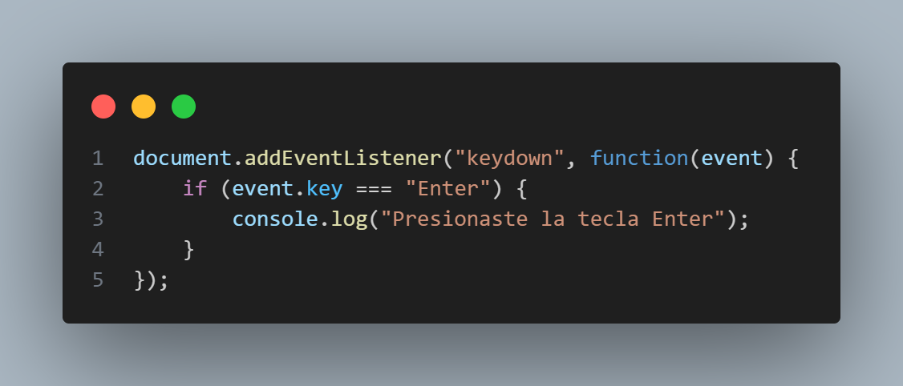Evento de Enfoque (focus, blur):
Se disparan cuando un elemento obtiene o pierde el enfoque.
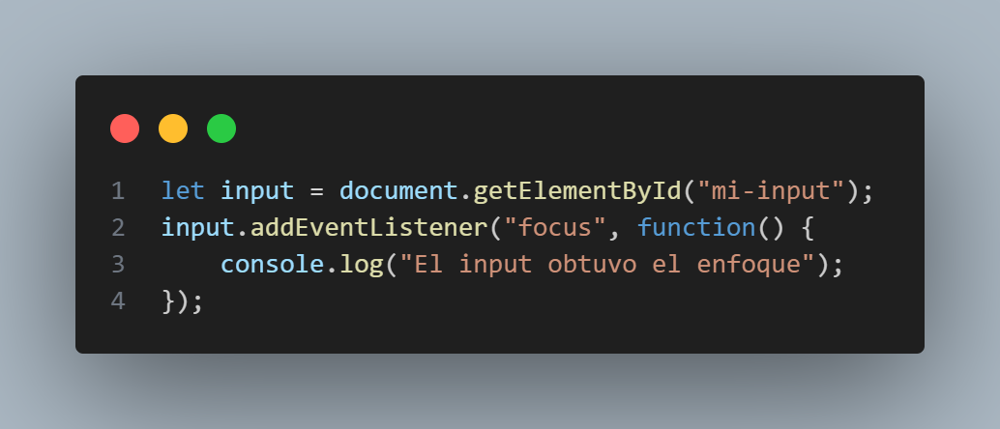Evento de Mouse (mouseover, mouseout, mousemove):
Se disparan cuando el mouse se mueve sobre un elemento, entra en él o sale de él.
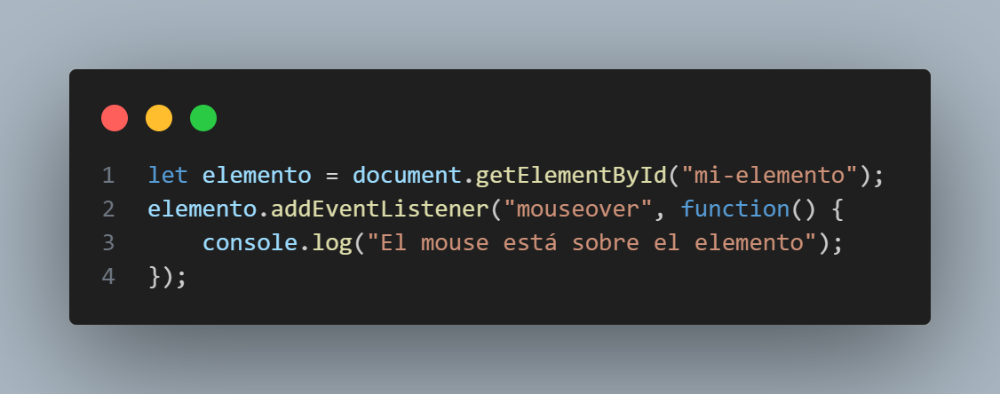Evento de Carga (load):
Se dispara cuando se completa la carga de un recurso, como una imagen o un documento.
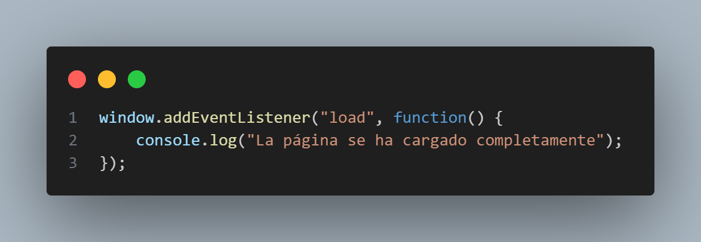Evento de Envío de Formulario (submit):
Se dispara cuando un formulario es enviado.
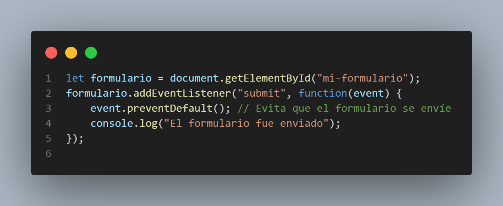Evento de Cambio de Tamaño de Ventana (resize):
Se dispara cuando cambia el tamaño de la ventana del navegador.
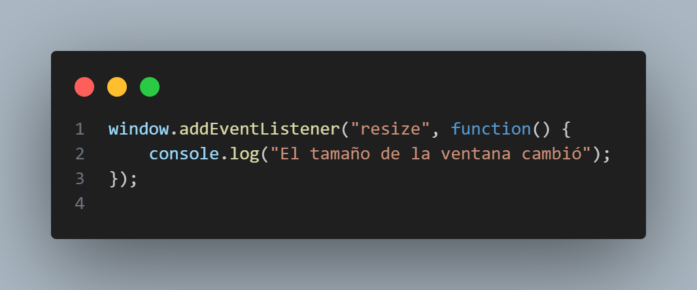Eventos con Parámetros y Remover Eventos
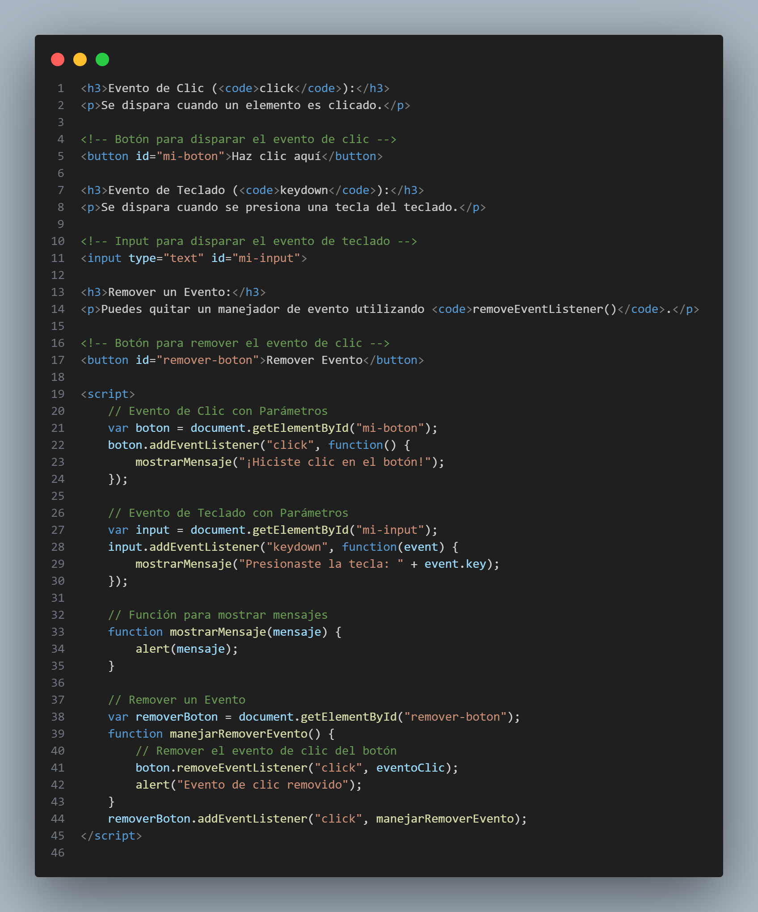Flujo de Eventos ( Burbuja y Captura )
El flujo de eventos en JavaScript se refiere al orden en el que los eventos son capturados y propagados a través de los elementos del DOM. Hay dos fases principales en el flujo de eventos: la fase de captura y la fase de burbujeo. Aquí tienes una explicación y un ejemplo de cada una
Fase de Captura
En la fase de captura, el evento se propaga desde el nodo raíz (generalmente el documento) hacia el nodo objetivo. Es decir, los eventos se capturan en los elementos más externos antes de llegar al objetivo real del evento. Esto puede ser útil cuando deseas capturar eventos en elementos padres antes de que se propague al elemento hijo.
Ejemplo
Supongamos que tienes una estructura de elementos anidados: div p button. Si haces clic en el botón, el evento pasará primero por el div, luego por el p y finalmente llegará al button. Esto es la fase de captura.
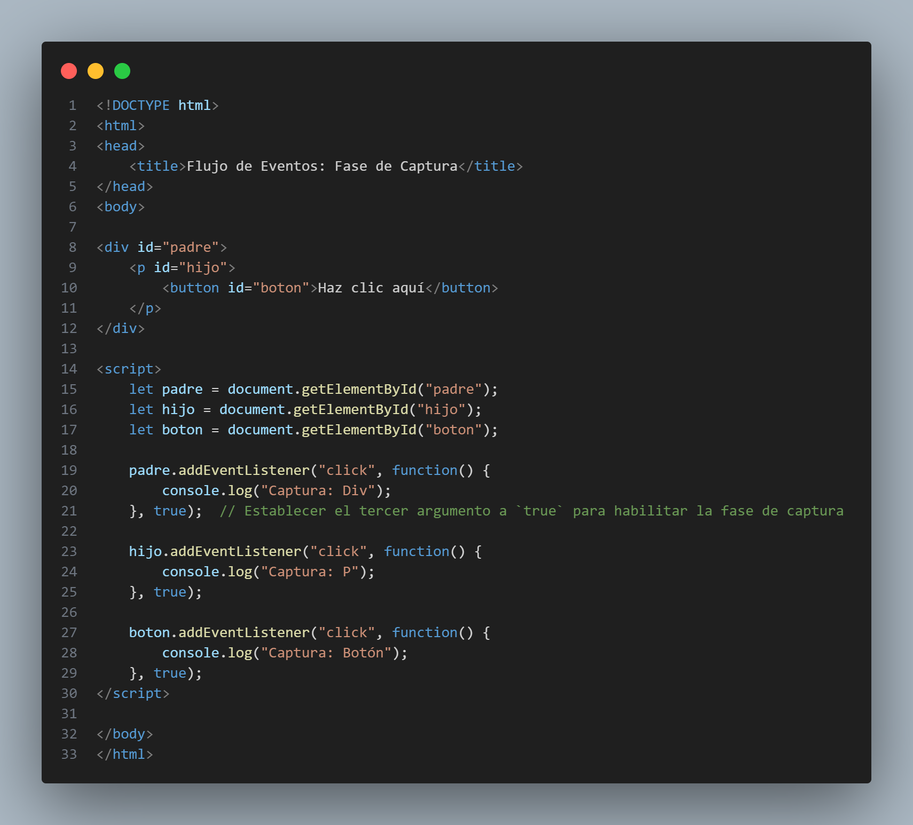stopPropagation & preventDefault
stopPropagation y preventDefault son dos métodos importantes en JavaScript para controlar el flujo de eventos y evitar el comportamiento predeterminado de los eventos. Aquí te explico cómo funcionan y te proporciono ejemplos de su uso
stopPropagation
El método stopPropagation se utiliza para detener la propagación del evento en el flujo de eventos, lo que significa que el evento ya no se propagará a los elementos padre o hijo. Esto es útil cuando deseas evitar que un evento afecte a otros elementos en el DOM.
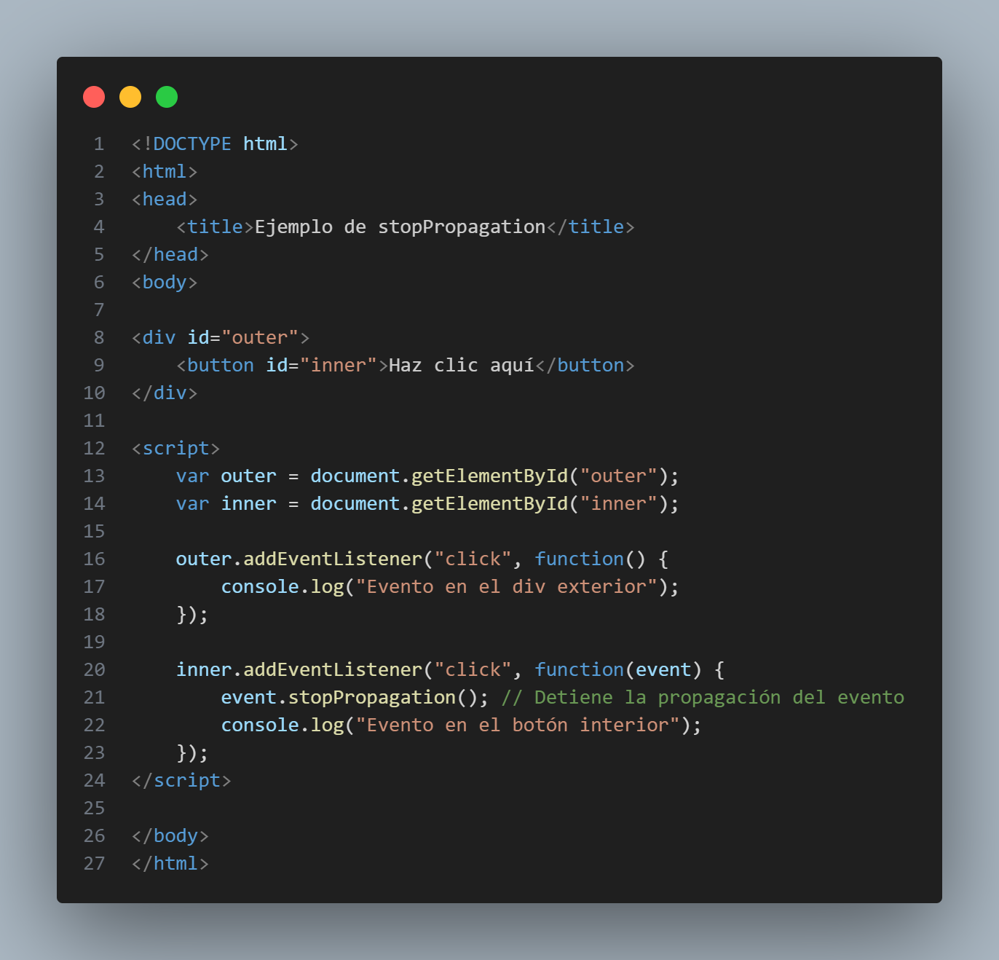preventDefault
El método preventDefault se utiliza para evitar que el comportamiento predeterminado de un evento ocurra. Por ejemplo, cuando haces clic en un enlace, el comportamiento predeterminado es navegar a la URL especificada en el atributo href. Si deseas evitar que el enlace navegue a esa URL, puedes usar preventDefault.
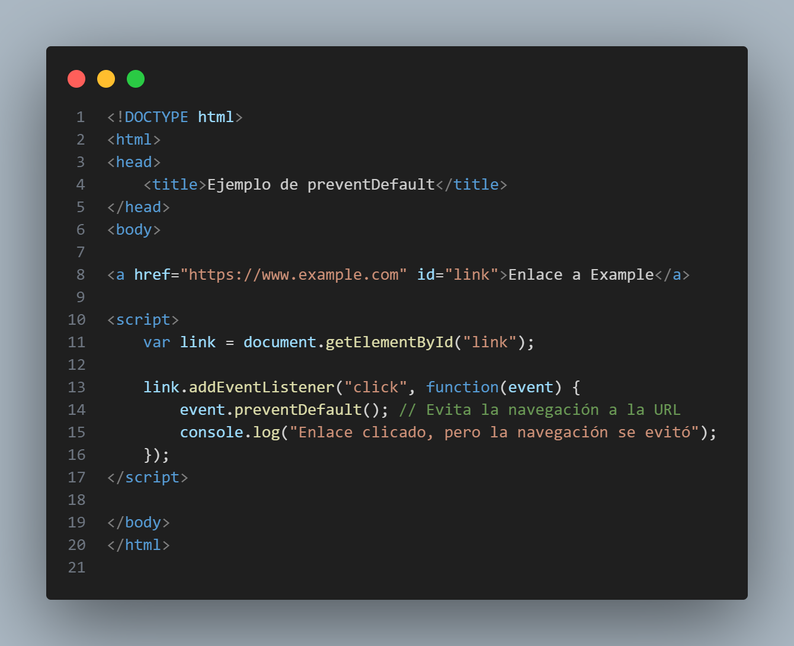Delegación de Eventos
La delegación de eventos es una técnica en JavaScript que implica agregar un solo manejador de eventos a un elemento padre en lugar de agregar múltiples manejadores a elementos secundarios individuales. Esto es especialmente útil cuando tienes muchos elementos secundarios con el mismo tipo de evento, ya que ayuda a reducir la sobrecarga de memoria y mejora la eficiencia.
Supongamos que tienes una lista de elementos li dentro de un elemento ul, y deseas que algo suceda cuando haces clic en cada elemento de la lista. En lugar de agregar un manejador de eventos a cada elemento li, puedes agregar un único manejador de eventos al elemento ul y determinar qué elemento li fue clicado.